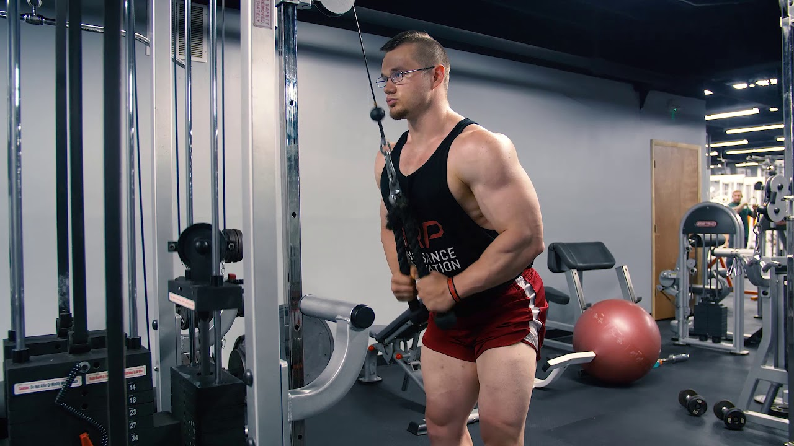
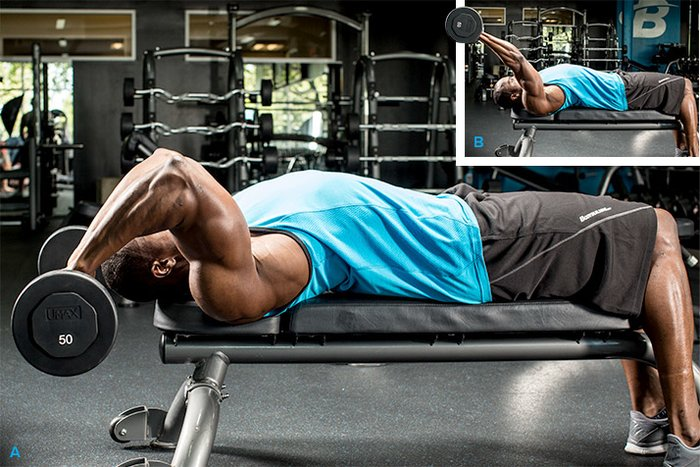
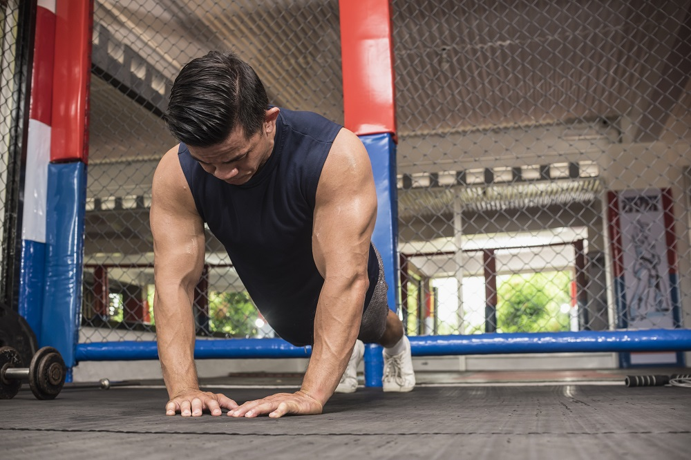

The bench press is a great tricep exercise to work your chest and core.
Placing your hands closer together makes it so your triceps have to work harder, which can lead to new growth and more strength.
How To Do Close Grip Bench Press:
Grasp a barbell with an overhand grip that’s shoulder-width apart, and hold it above your sternum with arms completely straight.
Lower the bar straight down, pause, and then press the bar back up to the starting position.
2. Rope Tricep Pushdown

This move zones in on your triceps – but only if you do it right.
If you use too much weight, you’ll involve your back and shoulder muscles, defeating the purpose. If you can’t keep your shoulders down, lighten the load.
How To Do Rope Push-Downs
Attach a rope handle to the high pulley of a cable station. Bend your arms and grab the bar with an overhand grip, your hands shoulder-width apart. Tuck your upper arms next to your sides.
Without moving your upper arms, push the bar down until your elbows are locked. Slowly return to the starting position.
3. Isolated Triceps Extension
When you work your triceps, you might forget there are three parts to the muscle: the lateral head, the medial head, and the long head.
The last part might not always get the attention it deserves – unless you're regularly doing exercises like this one, with your arms over your head to isolate the long head.
How To Do Isolated Tricep Extensions
Sit on a bench and grab one dumbbell. Form a diamond shape with both hands to grip the top end of the weight. Raise the dumbbell over your head, keeping your elbows up and your core tight.
Lower the dumbbell down the top of your back by bending at the elbow, maintaining your strong chest and keeping your shoulders still.
Raise the weight by fully extending your arms, pausing for a count to squeeze at the top of the movement.
4. Skullcrushers (Lying Triceps Extensions)

Whilst there are many variations of this move, they all have one thing in common: elbow extension. As the upper arms are locked in position, the long and lateral tricep heads are called into play.
Increasing the angle of an incline bench will work your triceps long head, while doing the movement on a decline bench places more emphasis on the lateral triceps head.
How To Do Skullrushers
Grip the EZ bar on the inner grips using an overhand grip and extend your arms straight up.
Keeping your elbows fixed and tucked in, slowly lower the bar until it is about an inch from your forehead. Always keep your upper arms perpendicular to the floor.
Slowly extend your arms back to the starting position without locking your elbows.
5. The Diamond Press-up (Push-Up)

It doesn't get any more basic than this tricep exercise. The standard press-up is great for your chest and arms, but moving your hands closer together puts the emphasis squarely on your triceps.
You're still going to get some work for your pecs with this variation, but your tri's should really feel the burn by the time you're through.
How To Do Diamond Press-Ups/Push-Ups
Lower yourself down into a standard plank or press-up position. Bring your hands close to each other at chest level, with your thumbs touching one another and your forefingers touching. Your spine should be straight, and your core and glutes should be squeezed tight
Lower yourself down to the floor. Pause, maintaining the squeeze in your core and glutes, then push back up to the original position by straightening your arms.
6. Dips
Dips are a compound, body-weight exercise. You do Dips by first raising yourself on two dip bars with straight arms.
Lower your body until your shoulders are below your elbows. Push yourself up until your arms are straight again. Dips work your chest, shoulders, back and arm muscles
How To Do Diamond Press-Ups/Push-Ups
Grab the parallel bars and jump up, straighten your arms
Lower your body by bending your arms while leaning forward
Dip down until your shoulders are below your elbows
Lift your body up by straightening your arms
Lock your elbows at the top